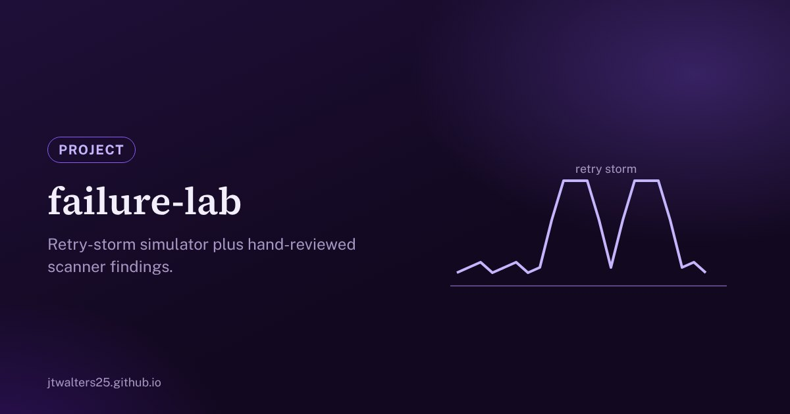
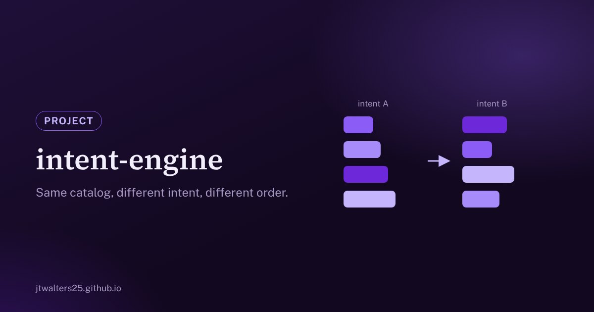
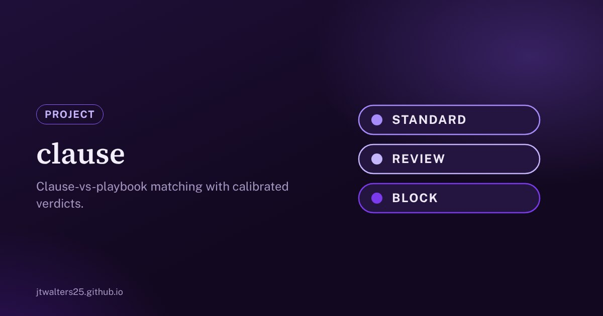
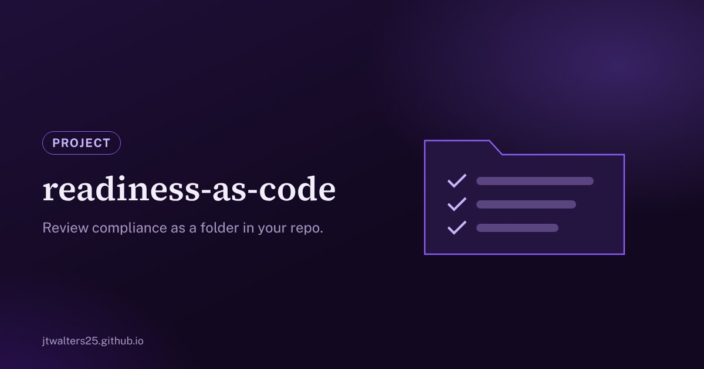

Keep a Brag Doc That Doesn't Lie
Every claim labeled Confirmed, Inferred or Missing. Precise credit instead of inflated credit, a weekly rhythm, and how to make it safe to share outside your company.
Father, builder, people-first engineer | Senior SWE & Delivery Lead @ Microsoft
Field notes on AI agents, reliability, and shipping things that hold up. People first. Always.
Every claim labeled Confirmed, Inferred or Missing. Precise credit instead of inflated credit, a weekly rhythm, and how to make it safe to share outside your company.
Notes from the middle of the climb: problems over tasks, multiplying others, why impact has a blast radius, and strategy you can explain in a paragraph.
Outcomes without authority, and without becoming the janitor. What a lead actually owns, influence without authority, nudges instead of nagging, and telling the truth upward.
Big ideas are cheap now. Proof still isn't. What a slice actually is, three that taught me something, and when slicing is the wrong call.
A coordinator that spent its whole budget before the A/B test started, why reusing existing skills beat adding agents, and a rule change that passed every test but found nothing in real repos.

A retry-storm simulator plus hand-reviewed scanner findings for retry anti-patterns in public code. The eval-first method, in miniature.

Deterministic, explainable intent-aware re-ranking: same catalog, different intent, different order, across streaming, music, e-commerce, ride matching, and food delivery.

Contract-clause intelligence: semantic clause-vs-playbook matching with calibrated STANDARD / REVIEW / BLOCK verdicts and an automated canary gate for safe rollouts.

Continuous review compliance as a folder in your repo: JSON definitions, a Python scanner, and a CI template. No infrastructure, no SaaS.